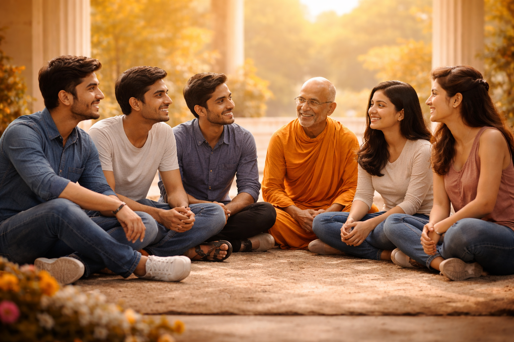

JAIN-Z Club • March 2026 • 4 min read
Every generation carries a responsibility, not just to preserve the past, but to reinterpret it for the future.
Today’s Jain youth stand at a unique intersection.
On one side, there is a rich legacy of philosophy, discipline, and values.
On the other, a rapidly changing world that demands adaptability, clarity, and awareness.
The question is not whether Jain youth will shape the future.
The question is - How consciously will they do it?
Jain philosophy offers tools that are more relevant today than ever:
These are not just religious ideas.
They are life skills.
When Jain youth begin to live these values, not just know them, they naturally become:
And this impact goes beyond the community.
It influences workplaces, Friendships, Society.
The future doesn’t need louder voices.
It needs clearer minds and kinder hearts.
Jain youth have the potential to bring that shift.
Not by being different.
But by being deeply aware.
Initiatives like JAIN-Z Club are small steps in that direction, creating spaces where young people can connect, reflect, and grow together.
Because the future is not built by ideas alone.
It is built by people who choose to live those ideas.